1. Introduction — What is PocketFlow?
~100 lines of Python · Zero Dependencies · Zero Vendor Lock-in
PocketFlow is a minimalist LLM framework that models applications as nested directed graphs.
Four core primitives:
- Node — unit of work (e.g., one LLM call)
- Action — labeled edge deciding next node
- Flow — orchestrates the graph walk
- Shared Store — common data dictionary
Figure 1: PocketFlow vs. mainstream frameworks
Core Primitives — How They Fit Together
From these four building blocks, PocketFlow can express every common LLM design pattern — Agents, Multi-Agents, Workflows, RAG, Map-Reduce — without adding new framework code.
Everything specific to your app (LLM client, database, tools) is code you bring. The framework only orchestrates the graph.
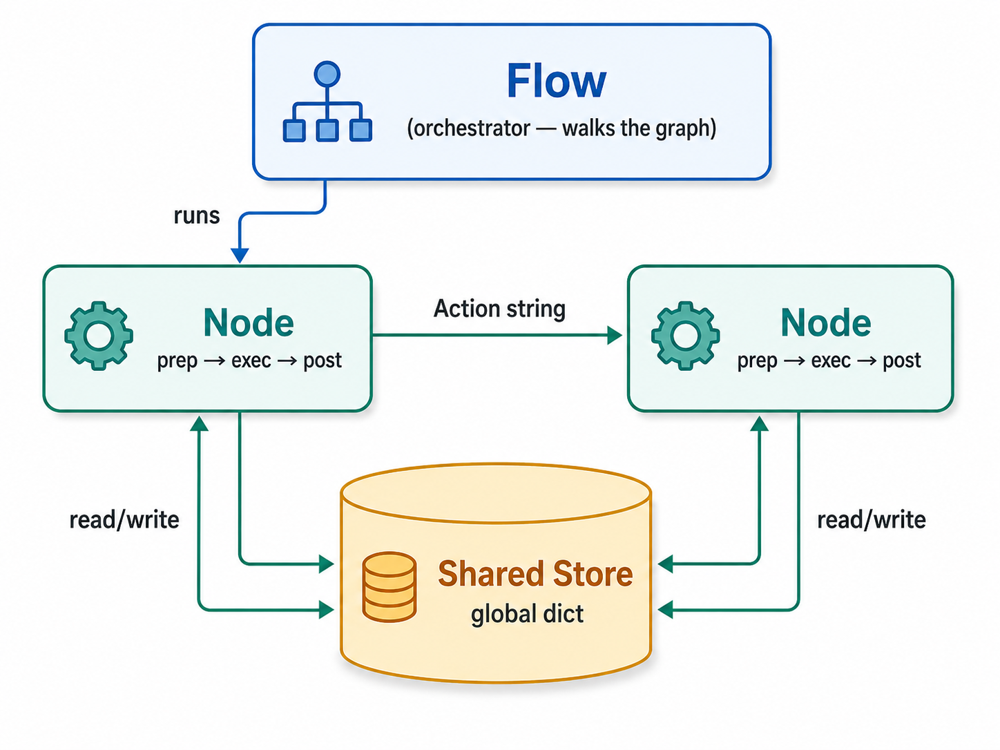
Figure 2: Four core primitives and their relationships
2. Architecture Views and Viewpoints Selected
| View | Stakeholders | Concerns Addressed |
|---|---|---|
| Context View | Developers, maintainers, users | System boundary, external systems, integration |
| Logical View | Developers, maintainers, port contributors | Core abstractions, responsibilities, relationships |
| Process View | Developers, testers, maintainers | Runtime behavior, branching, retries, flow execution |
| Development View | Maintainers, contributors, port communities | Repository structure, code organization |
| Deployment View | App developers, DevOps | Embedding in CLI, web, Streamlit, voice apps |
Figure 3: Architecture views selected for this recovery report
3. Stakeholder Analysis and Concerns
| Stakeholder | Main Concern |
|---|---|
| Framework maintainers | Keep core ~100 lines, readable |
| Application developers | Low learning curve, flexibility |
| AI coding agents | Fit framework in context window |
| End users | Reliable, responsive apps |
| LLM / infra providers | Be callable from any framework |
| Language-port communities | Consistent abstraction across languages |
Figure 4: Stakeholders, concerns, and trade-offs
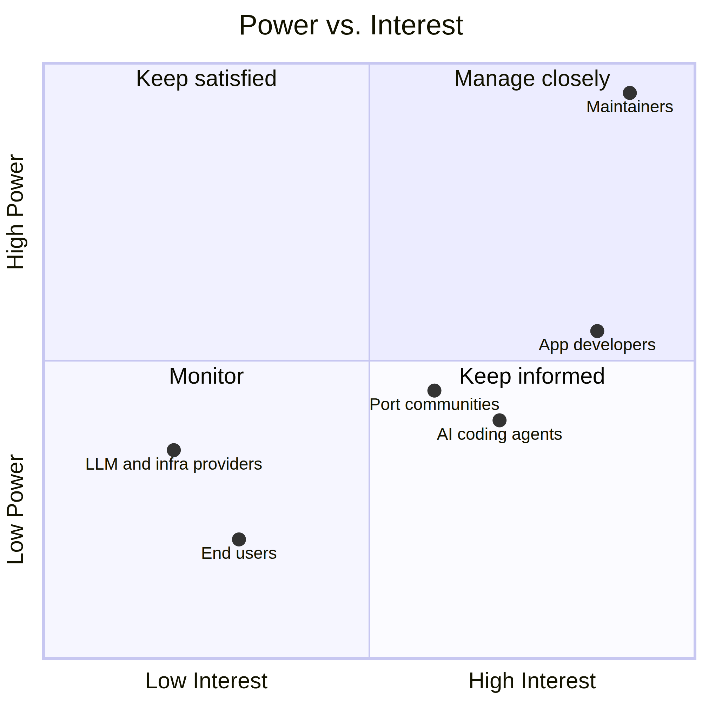
Figure 5: Stakeholder influence vs. interest map
4. Key Architecture Drivers
| Driver | Architectural Impact |
|---|---|
| Minimalism | Avoids heavy abstractions; keeps only Node, Flow, Action, Shared Store |
| Zero Dependencies | Integration logic pushed into user-written utility functions |
| Vendor Neutrality | "Bring your own integration" boundary; no vendor-specific code |
| Composability | Graph-based composition and nested flows enable all LLM patterns |
| Reliability | Nodes support retries, wait intervals, and fallback behavior |
| AI-Assistant Readability | Small, regular, convention-based code that fits in AI context windows |
| Portability | Language-independent abstractions; ported to 6+ languages |
Figure 6: Key architecture drivers and their impact
5. Architecture-Significant Use Cases
| ID | Use Case | Why Architecture-Significant |
|---|---|---|
| ASU-01 | Build sequential LLM workflow | Requires clear Node and Flow abstractions |
| ASU-02 | Build agent with branching & loops | Requires Action-based routing and graph traversal |
| ASU-03 | Build RAG pipeline | Requires composition of retrieval + generation nodes |
| ASU-04 | LLM/API call fails temporarily | Requires retry and fallback mechanisms |
| ASU-05 | Replace OpenAI with another provider | Requires vendor-neutral utility functions |
| ASU-06 | Reuse sub-flow in larger flow | Requires Flow-as-Node composition |
| ASU-07 | AI assistant generates an app | Requires small, readable, convention-based core |
Figure 7: Architecture-significant use cases
6. Context View
PocketFlow is an embedded library — not a service.
It draws a hard boundary:
- Inside orchestration logic
- Outside all integration logic
This "bring your own everything" boundary is why the install size is ~56 KB vs. competitors' 26–198 MB.
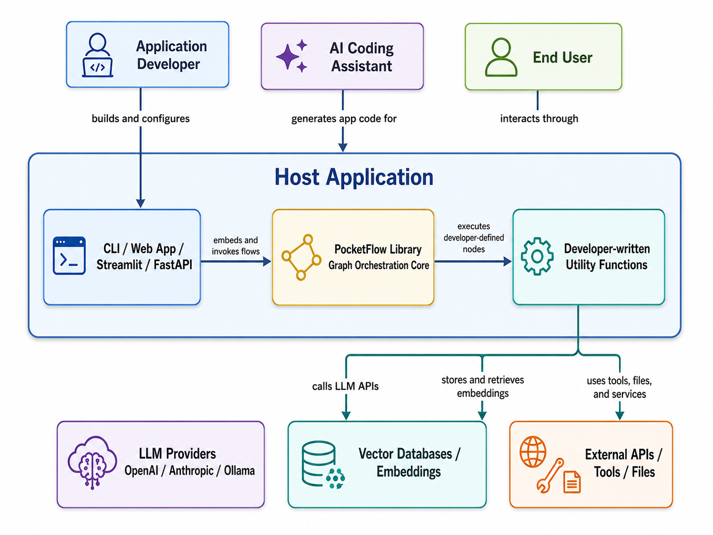
Figure 8: Context diagram
7. Logical View — Core Abstractions
Four abstractions, one base:
- Node — unit of work
- Action — routing result (a string)
- Flow — graph orchestrator
- Shared Store — communication state
Key insight: Node and Flow both inherit from BaseNode — this is what enables nested flows.
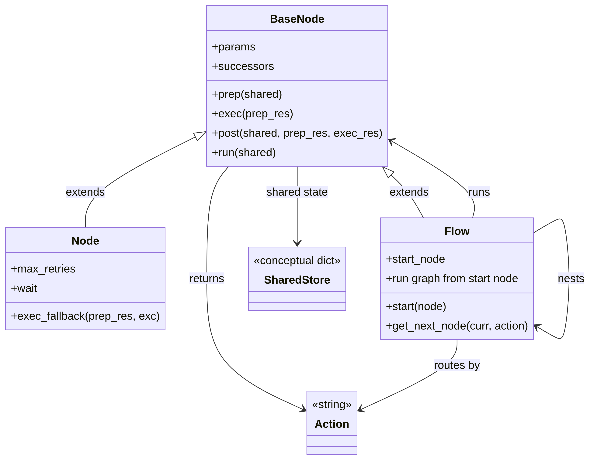
Figure 9: Logical view — class relationships
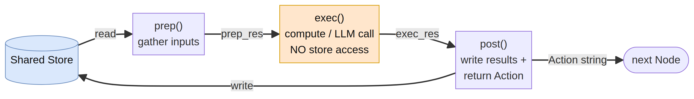
Figure 10: Node lifecycle — prep → exec → post
Node Lifecycle (3-step):
- prep(shared) — reads from Shared Store
- exec(prep_res) — computation; must not touch Shared Store
- post(shared, prep_res, exec_res) — writes & returns Action
Sealing exec() away from the Shared Store is what makes retries safe.
7. Logical View — Actions, Flow & Nested Composition
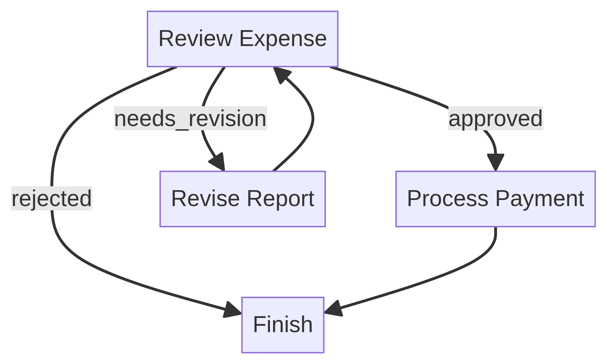
Figure 11: Expense-approval flow with branching
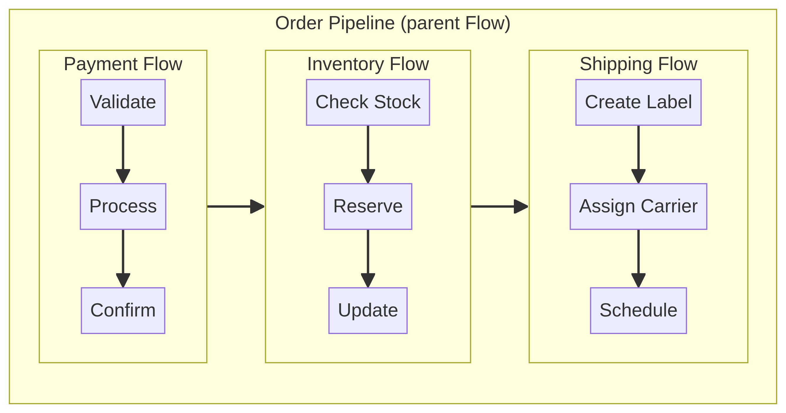
Figure 12: Nested flows — sub-flows as reusable components
Action = a plain string returned by post(). Syntax: node_a - "approved" >> next_node
Flow walks the graph: runs current element → reads Action → follows transition → repeats.
Nested flows: A Flow itself is a BaseNode, so it can be dropped into another Flow. Build large pipelines from small, reusable sub-flows.
8. Development View
Repository structure:
PocketFlow/
├── pocketflow/
│ └── __init__.py ← ENTIRE framework
├── cookbook/ ← self-contained examples
├── docs/ ← Core Abstraction / Design Patterns
├── tests/ ← core engine test suite
├── utils/ ← helper utilities
├── .cursorrules ← rules for AI coding assistants
└── README.md
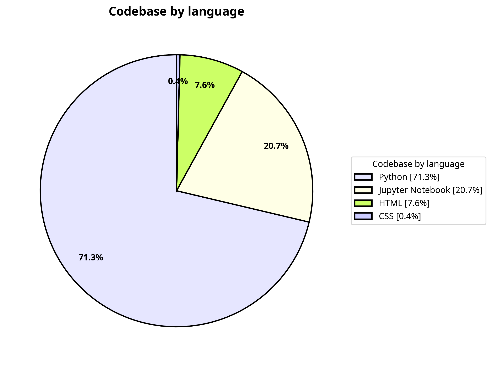
Figure 13: Codebase — ~76% Python, ~17% Jupyter notebooks
The framework code and integration code are kept strictly separate. PocketFlow ships zero vendor wrappers. Utility functions are documented as patterns developers copy into their own projects.
9. Process View — Runtime Execution & Failure Handling
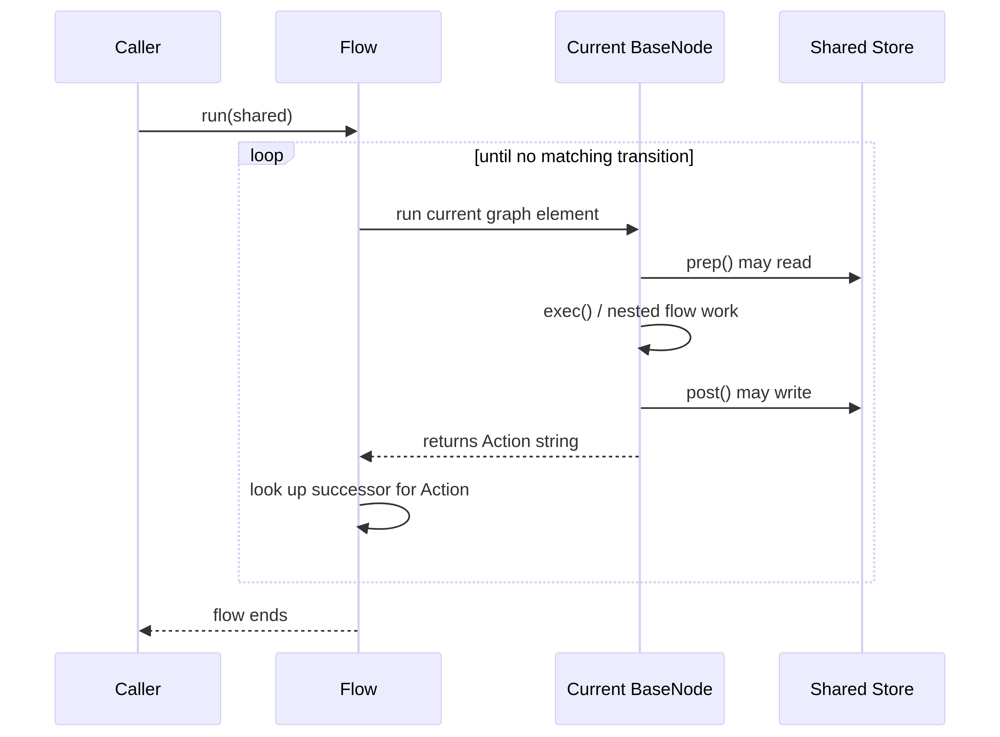
Figure 14: Basic execution loop
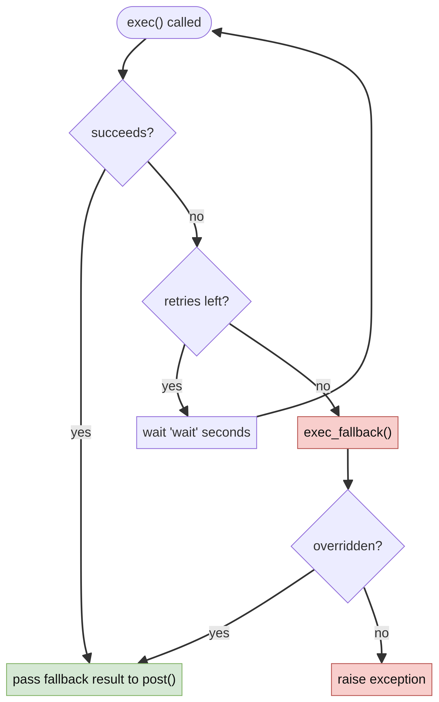
Figure 15: Failure handling — retries & fallback
Execution: Single-threaded synchronous walk by default. Flow runs current element → reads Action → transitions → repeats.
Failure: Node retries exec() up to max_retries with wait intervals. On total failure, exec_fallback() provides a safe result. Because exec() is sealed from Shared Store, retries leave state consistent.
Advanced: Async, Batch, and Async Parallel Batch variants for I/O-bound workloads. Some language ports are sync-only — an active complexity frontier.
10. Deployment View
PocketFlow is a library, not a service — no daemon, no server, no prescribed topology.
Deployment shapes (from cookbook):
- CLI tools — terminal-driven flows with human-in-the-loop
- Web backends — FastAPI + WebSockets + SSE
- Interactive apps — Streamlit with finite-state machines
- Voice applications — VAD → STT → LLM → TTS pipeline
Framework footprint: ~56 KB, no special hardware requirements.
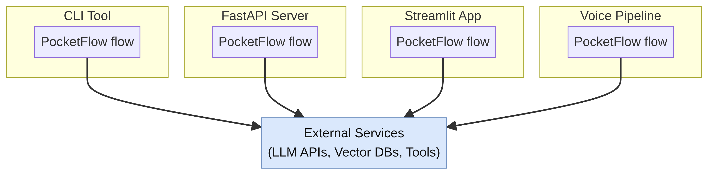
Figure 16: Deployment diagram
11. Architecture Design Decisions
| ID | Decision | Quality Attributes Affected |
|---|---|---|
| ADD-001 | Model LLM applications as graphs | Flexibility, composability, learnability |
| ADD-002 | Keep core minimal & dependency-free | Maintainability, portability, learnability |
| ADD-003 | Use bring-your-own integrations | Modifiability, vendor neutrality, maintainability |
| ADD-004 | prep → exec → post node lifecycle | Reliability, testability, separation of concerns |
| ADD-005 | Shared Store for node communication | Modifiability, composability, flexibility |
| ADD-006 | Action strings for routing | Flexibility, simplicity, agent support |
| ADD-007 | Flow composable as a Node | Reusability, composability, design scalability |
| ADD-008 | Optimize for Agentic Coding | Learnability, AI-assistance, developer productivity |
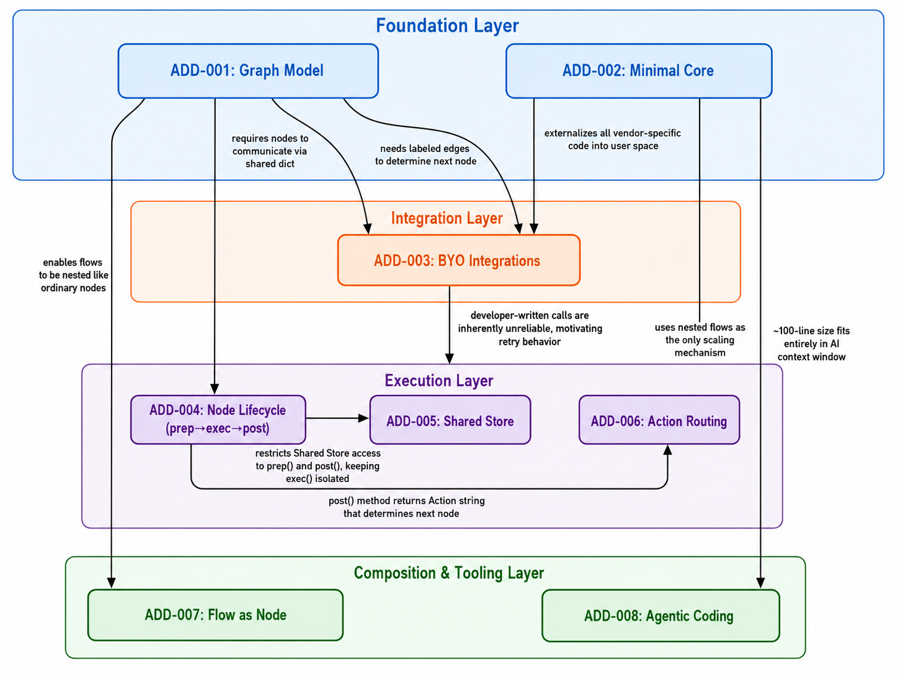
Figure 18: Decision relationship network
Figure 19: Decision Trade-Off Summary
| Decision | Main Benefit | Main Trade-off |
|---|---|---|
| ADD-001 Graph-based orchestration | One model can express workflows, agents, RAG, map-reduce, multi-agent | Developers must compose high-level patterns manually |
| ADD-002 Minimal core | Easy to understand, maintain, audit, and port | Fewer built-in features |
| ADD-003 Bring-your-own integrations | Vendor neutrality and low dependency risk | More integration work for developers |
| ADD-004 prep → exec → post lifecycle | Clear separation of concerns and safer retries | Slightly more ceremony for simple Nodes |
| ADD-005 Shared Store | Loose coupling between Nodes | Risk of unmanaged global mutable state |
| ADD-006 Action-string routing | Simple branching, looping, and agent behavior | Possible errors from string typos |
| ADD-007 Flow as Node | Reusable and hierarchical composition | Slightly more complex mental model |
| ADD-008 Agentic Coding optimization | Easier AI-assisted development | Relies on conventions and examples |
12. Architecture Patterns Used in PocketFlow
| Pattern | Match | How It Appears |
|---|---|---|
| Template Method | Strong | prep → exec → post lifecycle; devs override steps |
| Composite | Strong | Flow as BaseNode; nested inside another Flow |
| Blackboard / Shared Repository | Strong | Nodes read/write Shared Store without direct calls |
| Pipe and Filter | Partial | Nodes as processing steps in sequence/graph |
| Layered Boundary (tactic) | Present | Orchestration core separated from integration code |
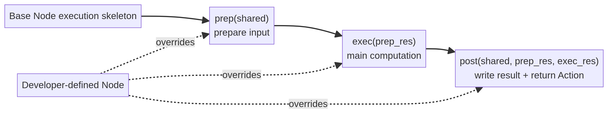
Fig 21: Template Method
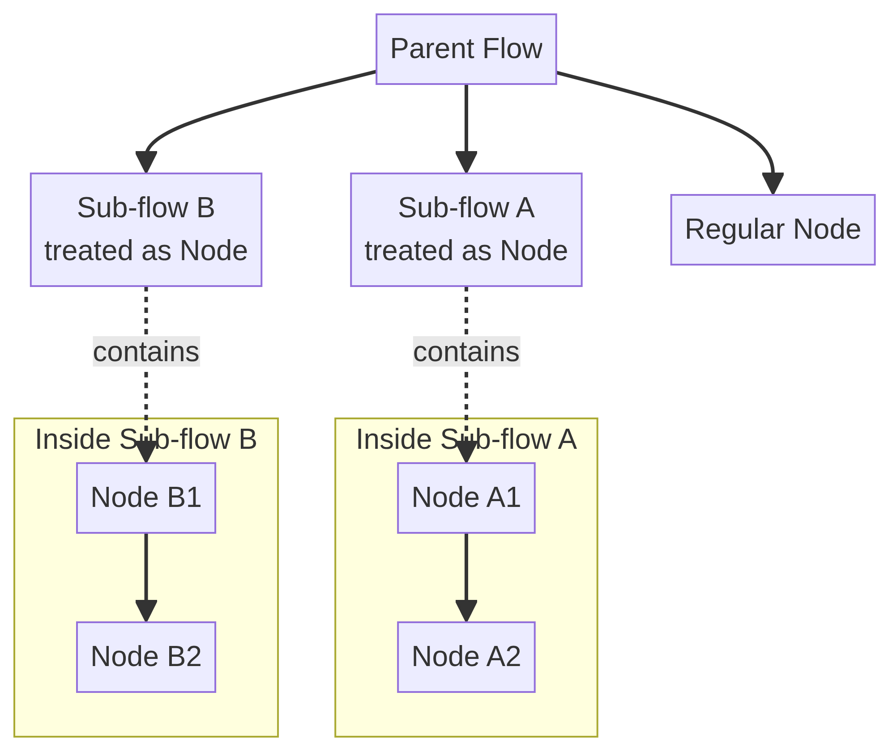
Fig 22: Composite
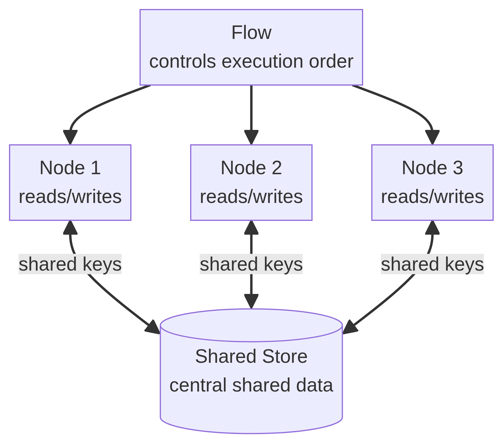
Fig 23: Blackboard
12. LLM Application Patterns — Expressed by Composition
These are not built-in framework classes — they emerge from composing the four primitives.
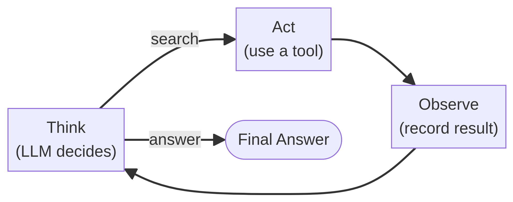
Figure 26: Agent — looping flow with decision node
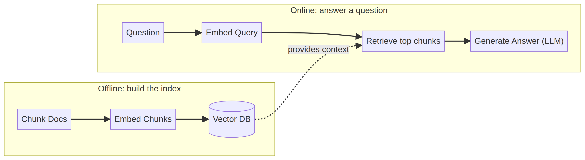
Figure 27: RAG — retrieval + generation
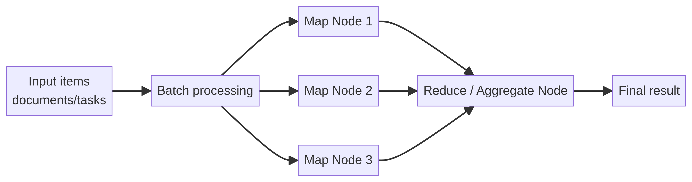
Figure 28: Map-Reduce — batch + aggregate
| Pattern | Expressed As | Pattern | Expressed As |
|---|---|---|---|
| Workflow | Sequence/graph of Nodes | Agent | Looping Flow with decision Node |
| RAG | Retrieval Flow + Generation Flow | Map-Reduce | Batch Nodes + aggregation step |
| Structured Output | Node with parsing logic | Multi-Agent | Multiple agent Nodes / sub-flows |
13. Quality Attribute Scenarios & Tactics
| QA | Attribute | Scenario | Tactic |
|---|---|---|---|
| QA-01 | Modifiability | Provider API changes — only utility function needs update | Encapsulate integrations outside core |
| QA-02 | Reliability | LLM call fails — retries up to max_retries, then fallback | Retry, fallback, side-effect isolation |
| QA-03 | Learnability | New developer needs to understand framework | Minimal core, small conceptual model |
| QA-04 | Portability | Contributor ports to another language | Language-independent abstractions |
| QA-05 | Performance | Many independent LLM calls — use async/parallel | Async, batching, parallelization |
| QA-06 | Testability | Test one node without full app or real services | Separate prep/exec/post; isolated units |
| QA-07 | Maintainability | Feature request for built-in integrations | Keep core small; push features to examples |
| QA-08 | Debuggability | Flow stops — no transition matches Action string | Explicit routing; localized inspection |
Figure 29: Quality attribute scenarios | Figure 30: Tactics summary
14–16. Technical Debt & Conclusion
Six debt items identified:
| Debt | Who Pays |
|---|---|
| Pushed-out complexity | Developers |
| Global mutable Shared Store | Developers |
| Implicit graph structure | Developers |
| Incomplete concurrency (ports) | Port communities |
| Documentation-as-implementation | Developers |
| Limited built-in observability | Developers |
Figures 31–32: Technical debt analysis
Conclusion:
PocketFlow is best understood as a minimal, composable orchestration kernel.
Its real product is an abstraction — the bet that with the right four primitives, everything else is just composition.
Key trade-off: Complexity is not eliminated — it's relocated into user code and documentation. For small-to-medium apps and teams valuing transparency, this is an excellent bargain.
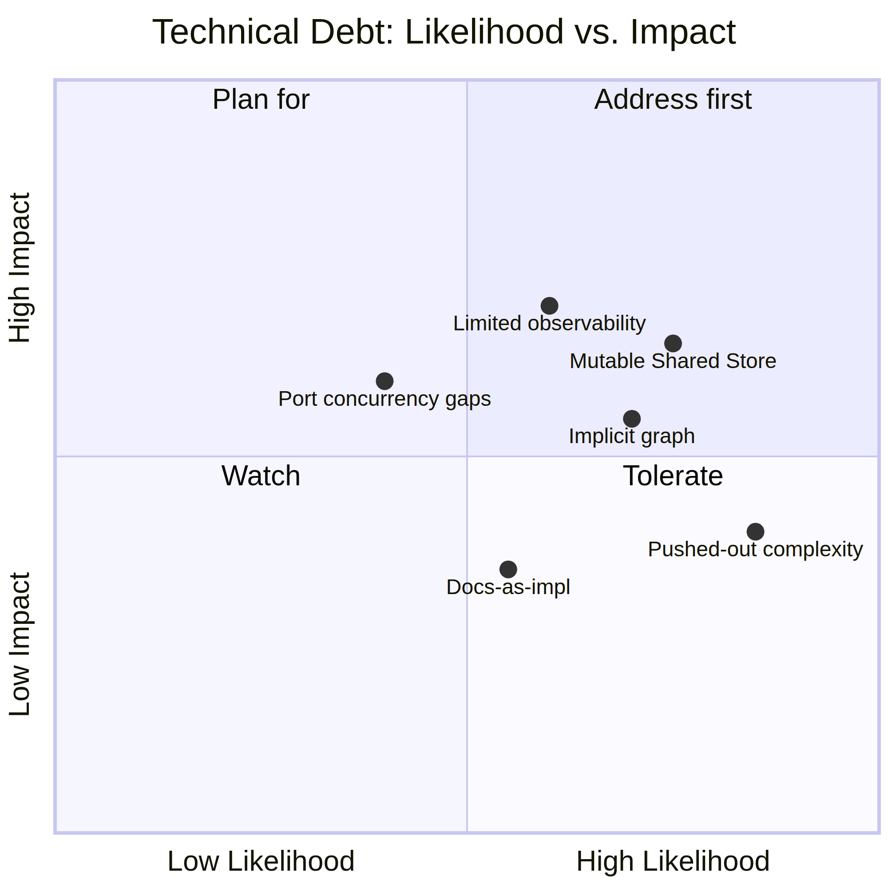